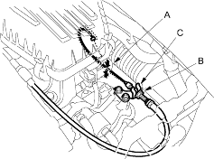

- Check cable free play at the throttle linkage. Cable deflection (A) should be 10-12 mm (3/8-1/2 in.).

- If deflection (A) is not within spec (10-12 mm, 3/8-1/2 in.) loosen the locknut (B), turn the adjusting nut (C) until the deflection (A) is as specified, then retighten the locknut (B).
- With the cable properly adjusted, check the throttle valve to be sure it opens fully when you push the accelerator pedal to the floor. Also check the throttle valve to be sure it returns to the idle position whenever you release the accelerator pedal.